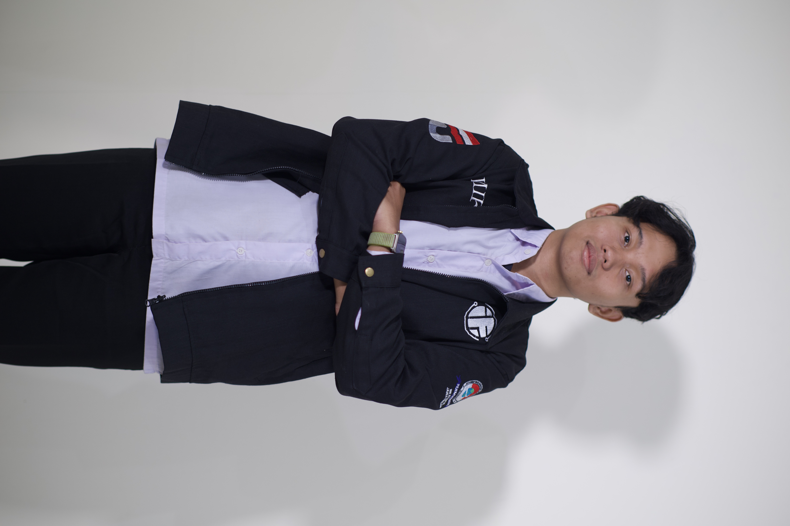

Mahasiswa Teknik Informatika | Pengembang Web, Jaringan, & Keamanan Siber
Lihat Proyek
Saya adalah mahasiswa semester 4 S1 Teknik Informatika di Telkom University Purwokerto. Saya memiliki minat utama pada Jaringan Komputer, Keamanan Siber (Cyber Security), dan Kecerdasan Buatan (Fuzzy Logic). Pengalaman saya mencakup konfigurasi infrastruktur IT hingga pemrosesan data, serta pengembangan sistem dan website modern.
Selain berfokus pada sisi teknis, saya juga memiliki ketertarikan yang kuat pada organisasi dan kepemimpinan. Saya percaya bahwa kolaborasi tim, public speaking, dan manajemen yang baik sama pentingnya dengan keahlian pemrograman dalam menciptakan solusi yang berdampak luas.
MikroTik, Cisco, TCP/IP, Cyber Security, Kali Linux
Python, Streamlit, Pandas, Fuzzy Logic
Backend, Firebase, Midtrans API
Figma, Canva, Leadership, Public Speaking
Python, Streamlit, Pandas
Membangun sistem inferensi Fuzzy Logic (Mamdani & Sugeno) untuk memprediksi persentase kemenangan pemain PUBG.
Firebase, Midtrans
Platform e-commerce fesyen dengan sistem logistik dinamis dan integrasi pembayaran QRIS secara real-time.
Backend Logic, Payment API
Aplikasi web untuk mengelola alur data transaksional dan integrasi payment gateway dengan aman dan efisien.
Infrastruktur IT, Digitalisasi Tata Kelola
Inisiatif transformasi desa pintar (smart village) dengan fokus pada pemanfaatan digitalisasi tata kelola lokal.